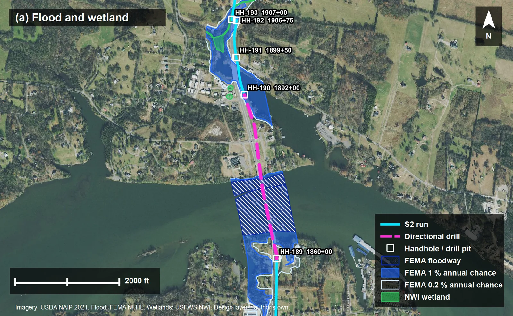
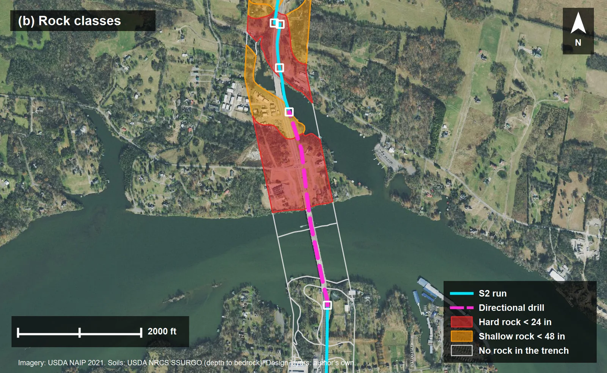
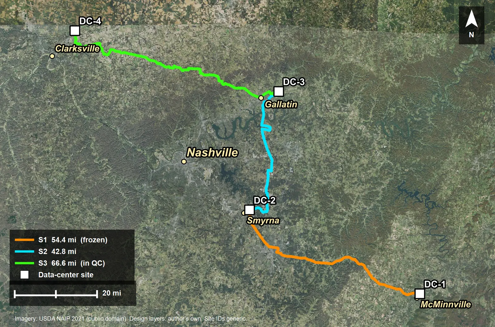
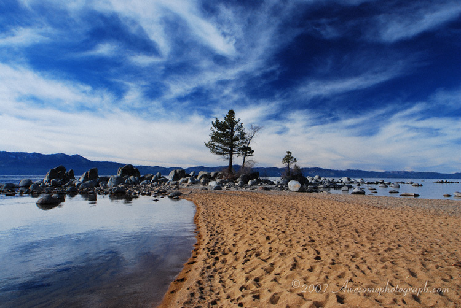
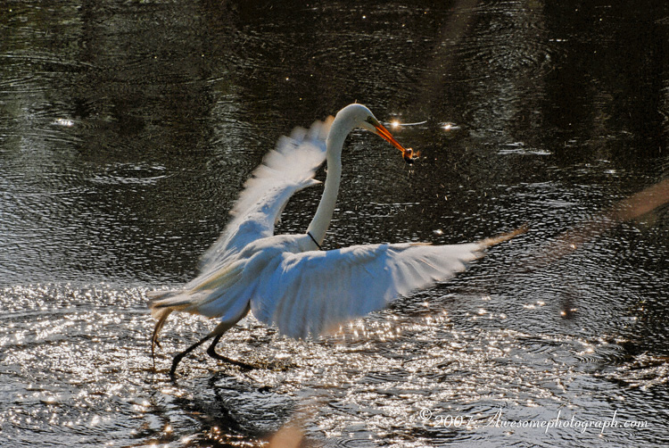
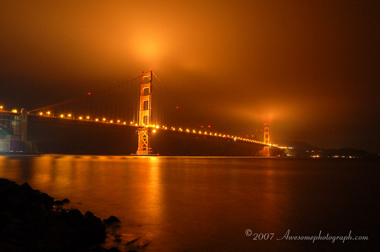

STA 0+00Start
Thirty years of outside-plant knowledge, written down as rules a machine can follow.
I have spent three decades leading fiber programs: planning, design, permitting, construction. Now I build software that does the gathering, the first draft and the checking, so an engineer's hours go to the decisions only an engineer should make.
GitHubLinkedInstevensgurden@gmail.com
One river crossing on a test route, read two ways. Before a line is drawn, the software reads what the ground and the public record say about it.




Water. Flood zones, wetlands and open water. Here one directional drill of 3,216 ft carries the run under 1,781 ft of open water on the Cumberland River. It is drawn beside the highway bridge, not under it, and the FEMA floodway lies under the bore. The north pit sits in the 1% annual-chance flood zone. The rule that keeps pits out of that zone was written later, so this pit is marked to move.
The same layers are counted on every route. Across the Middle Tennessee test legs that came to 10 open-water bores, 153 stream crossings and 148 wetland stretches.
Rock. The same frame over USDA soil-survey rock classes: depth to bedrock in a 36 to 48 inch trench. South of the river the survey shows no bedrock to 80 inches. On the north bank the drill pit lands in shallow rock, about 30 inches down, and the next three handholes in hard rock, about 18 inches.
The survey speaks to trenching and pit excavation, not to conditions at bore depth. A river bore of this size still needs its own geotechnical borings.
Choose a layer. Select the picture to enlarge it. Select it again to come back.
- Drawn
- Route software, on Claude
- Sheet
- Leg S2 · STA 1860+00 to 1892+00
- Data
- FEMA NFHL · USFWS NWI · USDA SSURGO
- Imagery
- USDA NAIP 2021, public domain
STA 1+00Results
What it has done so far
Laying out one mile of long-haul fiber route by hand takes a senior engineer about three hours. That is my own working figure from thirty years of high-level design (HLD). On 177 miles of routes I built for testing, the software's first draft plus my complete review has taken about 24 hours so far. By hand, the same miles come to roughly 531.
No customer materials were used. These are test projects I set up on real locations, built entirely from publicly available, open-source data between September and November 2026.
| Route | Miles | By hand, 3 h/mi | Software + my review | Engineer's grade |
|---|---|---|---|---|
| Practice ring | 13.31 | 39.9 h | 4.6 h | 90–91% |
| Long-haul leg S2 first built | 42.84 | 128.5 h | 8.2 h | 95% |
| Long-haul leg S1 frozen as final | 54.39 | 163.2 h | 6.5 h | 98–99% |
| Long-haul leg S3 under final validation | 66.61 | 199.8 h | 4.5 h so far | pending |
| Total | 177.15 | about 531 h | about 24 h so far | — |
Engineer's grade is my accuracy grade of the version I reviewed. The grades came after one, four and five review rounds, so they are not first-draft numbers.
What these numbers count, and what they leave out
- Counted: the time from the end of the corridor survey to the first map on screen, and every minute of my review, by my clock.
- Not counted: my time choosing routes and downloading base data; the software's rebuilds between review rounds, 17 to 44 minutes each; and the weeks spent building the pipeline and its rules, which is a one-time cost.
- Still open: leg S3. I estimate three to four more hours, which would put the total near 27.
- The measure I trust most is review minutes per mile: 20.5 on the practice ring, about 8 on S2, 6.7 on S1, and 3.7 so far on S3. Route length quadrupled while my review hours stayed flat.

STA 2+00Method
The software drafts. The engineer rules.
Most of an engineer's week goes to finding information, drawing what the information implies, and checking the drawing. Software can do those three things. What it cannot do is decide what is right where no rule exists yet. So the work is split along that line, and every decision I make is kept as a rule for next time.
- GatherParcels, right-of-way and easement lines, roads, rail, hydrography, wetlands, flood zones, soils and terrain are clipped to the corridor. Every layer carries its source and its vintage.
- DraftCandidate corridors come first, with every specialized crossing counted on the drawn line: railroad, state DOT, Army Corps water. Then the run is drawn against the live rule register.
- CheckEvery build is audited and compared with the last version I approved, before anyone looks at a screen. On a first route I review every foot. After that I receive a numbered list of exceptions by station and do not re-check the whole drawing.
- RuleAccept, defer or reject. A first ruling writes a candidate rule. A second occurrence turns it into a hard gate. A third is the software's defect, fixed before I am shown anything.
The first time through, the engineer reviews everything. That review is the training: each correction becomes a rule, and the next route brings back only what no rule covers yet.
Three rules, and where each came from
A single hard turn of 60 degrees or more gets one handhole at the vertex of the two 4-ft offset lines. It is never hand-trenched. Hand trench is kept for S-curves.
Leg S3 · STA 2879+00 · ruled 3 Nov 2026
The run stays inside the public right-of-way. It never crosses the line onto a private parcel.
Leg S3 · ruled 3 Nov 2026 · footage drawn inside private parcels fell 85%
Handholes stay out of the floodway and out of the 1% annual-chance flood zone.
Written on leg S1 · leg S2 predates it and has one bore pit still to move
The register holds 112 rules. About 77 of them run as code today; the rest are written and waiting their turn.
STA 3+00Team
Who does what
I work with a small team of AI agents. Each one has a single job and a single set of records it is allowed to write. They are software, not people, and they are named here by what they do. I approve everything that goes out.
- Approval Jerry Stevens, human principal
- Rules on every deliverable. Publishing, sending, deleting and paying happen on my click and no one else's.
- Chief of Staff Claude, by Anthropic
- Plans the work, builds the tools, writes the first draft, and keeps the specialists in their lanes.
- Records and provenance AI agent
- Checks where every public item came from before it ships. Its clearance is blocking.
- Memory and files AI agent
- Decides what is written down and what is retired, and hands each session its starting point.
- Training and evaluation AI agent
- Runs my certification study and keeps the score honest.
- Design and publishing AI agent
- This page, and the public face of each repository.
- Project chronicle AI agent
- Keeps the dated record of what each project decided, and why.
- Independent review Grok, by xAI
- A second model reads the designs. Its notes are filed as suggestions and never merged blind.
House rules
- One writer per record. No agent edits another's section.
- Anything that crosses a lane is a written, dated flag. Only the one it is addressed to may close it.
- The maker and the checker are never the same agent.
- Every rule traces to the day and the reason it was made. There are 64 dated decision records so far.
What the team remembers
An assistant that forgets has to work everything out again each morning. Ours end every session by writing down where the work stopped, so the next one starts there without being told.
How the memory is governed
- Long-term memory runs on my own machine in MemPalace, an open-source memory server that we operate and govern but did not write. As of 12 November 2026 it holds about 180,000 passages, indexed as vector embeddings so an agent can search by meaning and not only by keyword.
- Beside the index sits a temporal knowledge graph. Each fact is a subject–predicate–object triple that carries the dates it was true. When a single-valued fact changes, such as a version, a status or an exam date, the old triple is closed and the new one opened in the same step. The graph can then answer two questions: what is true now, and what it replaced. It holds 308 facts about 462 entities; 33 of those facts are retired and kept as history.
- Before an agent answers, it asks the graph for exact facts and the index for context.
- Hand-written notes live in Obsidian: plain Markdown files in a vault on the same disk, linked note to note. Every working session ends by adding a few lines to the day's note. The memory server indexes the vault, so a note written by hand is as searchable as anything else.
- One number lives in one home and is referenced elsewhere, never restated.
- Memory decays by class. Rulings are superseded, telemetry is rolled up, and flags are archived after 30 days.
- A weekly lint checks the structure.
- On 5 November 2026 we read Anthropic's published recipe for agent memory against our own design, line by line. It was ahead of us in four places. One mattered: checking the memories already on file against the source transcript before adding new ones, which catches a contradiction that structure alone cannot. We adopted it that week. Two are housekeeping: narrower tool permissions for the memory passes, and a cost estimate before a job runs. The fourth, rules for several writers editing at once, solves a problem we avoid by allowing one writer per record.
STA 4+00Research
On the bench
Each line says what the thing is and how far along it is. Only one of them is public code today, and it is linked.
Status as built on 12 November 2026.
- OperationalLong-haul route draftingThe system on this page: corridor candidates, high-level design, audit, rule register. Three test routes are complete. The fourth is under final validation.
- Releasedosp-gdb-validatorSchema QC for Esri file geodatabases on open-source GDAL, with no ArcGIS license. Thirteen checks, typo-aware domain validation, tests on every commit. MIT license.
- OperationalModel-to-model review bridgeA Model Context Protocol (MCP) server that lets a second model review a design on its own.
- Active researchPole loading and make-readySorting the poles that need no make-ready from the ones that do, then drafting the attachment moves for an engineer to approve.
- Active researchPoles from imagery and LiDARFinding poles and measuring attachment heights from camera and LiDAR capture, then drawing them in GIS.
- PilotPermit atlasWhich authority permits what, state by state: DOT, county, city, railroad, Army Corps, pole owner. Tennessee first.
- StartingGIS to CADPermit drawings and construction prints, exported from the GIS design with materials attached.
STA 5+00Photographs
“Mother Nature lays out the canvas. I just capture it on film.”
That line has been on my photography site since 2007. A trip to Juneau, Alaska in the spring of 2006 opened my eyes to photography and to nature. The pictures are from the years that followed: national parks, wildlife, moonlight, and the landmarks people have built. I hope they make someone a little gentler with our neighbors in the wild.
Awesome Photograph: the full sitePortfolio by subject



STA 6+00Background
Thirty years, briefly
Outside-plant programs led from end to end: bid preparation and RFQ response, high-level design (HLD), permitting, low-level design (LLD), construction and all-phase quality control. With that came the accountability: the teams, the budgets, the client commitments, the delivered networks.
- Rings and backhaul882 route-miles of fiber rings and 269 tower sites in one regional expansion, across seven contract firms and 38 engineers.
- Fiber to the homeA design program grown from 182 projects a year to 734. In one of those years, 41.5 million feet of construction-ready design. A city's first fiber build, 5,500 passings, on time and on budget.
- PermittingArmy Corps of Engineers river-crossing approvals brought from six months to 30–45 days, then to three days once reviewers trusted the package. A railroad blanket agreement that cleared 80 crossings in five years at 45 days each, down from six months. State DOT, county and city right-of-way, pole attachment and make-ready are the daily landscape.
- Education and certificationComputer science, Rutgers University. AWS Certified AI Practitioner, Solutions Architect – Associate and Cloud Practitioner, 2026.
The year-by-year record is on LinkedIn.
STA 7+00Colophon
How this page was made
The same way the routes are. A design agent drew it, Claude built it, a records agent checked where every figure came from, and I approved it. It is one HTML file with no trackers, no cookies and no requests to anyone else's servers. It was built to WCAG 2.2 AA and looked at, top to bottom, on a phone and on a desktop before it went out.
- Drawn
- Design and publishing agent
- Built
- Claude, Chief of Staff
- Cleared
- Records and provenance: cleared 12 Nov 2026
- Approved
- J. Stevens: pending
STA 8+00Contact